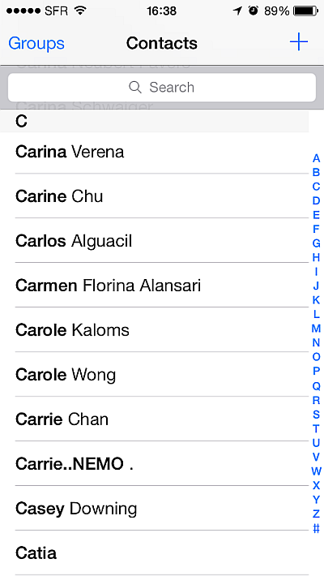

Coding Tips From Abe Lincoln
I recently built an indexed table list view with HTML/CSS and JavaScript for a hybrid PhoneGap/Cordova application. I wanted my scrolling list to have a user experience close to the iOS Contacts application.

Problems
I ran into several problems with Apple’s implementation of -webkit-overflow-scrolling: touch.
1). White Flicker After adding the CSS property -webkit-overflow-scrolling: touch in order to get smooth momentum scrolling a strange white flicker started occurring. When scrolling fast, elements of the list would seem to flicker and disappear.
2). Scroll Events The other main issue that I ran into with -webkit-overflow-scrolling: touch is that it does not continuously fire scroll events like the standard CSS scroll properties. It only fires events on scroll start and scroll end. This made it impossible to implement sticky section headers like you see in the iOS Contacts List or other scrolling list view apps like Instagram.
3). scrollTo() Responds Slowly.
Fixing the White Flicker
On a scrolling list with -webkit-overflow-scrolling: touch when child elements have position:relative and are offscreen you will experience rendering issues due to a buggy implementation by Apple after iOS 5. If you search google or stack overflow for white screen flicker while scrolling you will see that this a common issue that has been plaguing users. Fortunately iOS 8 seems to have fixed the issue. If your device target is below iOS 8 then you might still need to implement the following fix:
-webkit-overflow-scrolling: touch works by inconsistently promoting elements to their own hardware accelerated layers.
The fix I found is to force all elements inside the scrolling area to be hardware accelerated: this prevents inconsistencies.
.scrolling-container > * {
-webkit-transform: translate3d(0,0,0);
}
Applying the property -webkit-transform: translate3d(0,0,0); is a technique to force some devices to use hardware acceleration on the transitions for those elements. Smashing Magazine explains:
Native applications can access the device’s graphical processing unit (GPU) to make pixels fly. Web applications, on the other hand, run in the context of the browser, which lets the software do most (if not all) of the rendering, resulting in less horsepower for transitions. But the Web has been catching up, and most browser vendors now provide graphical hardware acceleration by means of particular CSS rules.
Using the GPU to render element transitions is memory intensive, so use this as sparingly as possible. We only used this hack because there was no other workaround at the time.
Scroll Events
Before iOS 8, Apple’s mobile browser did not continuously fire scroll events: unlike standard desktop browsers, which do. This makes it impossible to execute code while the users scroll and get responsive components like parallax effects or sticky headers.
The good news is the issue has finally been fixed in iOS 8 with the new WKWebView replacing the buggy UIWebView. The bad news is that WKWebView still has bugs which prevent Cordova developers from using it. Thankfully, Telerik has released a polyfill that patches WKWebView and provides a drop in replacement allowing you to use it as a plugin.
Adding WKWebView to my project not only fixed the white flicker hardware issues described above, but also provided me with continuous scroll events to develop on. And wait, there’s more! WKWebView also dramatically increases render performance of scrolling elements!
Check out Telerik’s plugin and a blog article explaining the situation with Scroll Events more in depth.
scrollTo()
I wanted to build something similar to the alphabetic index controls you see on the right hand side of the iOS Contacts list app. The problem was that when using the -webkit-overflow-scrolling: touch the scrollable container would not scroll instantly in response to jQuery scrollTop() or the window scrollTo() methods.
To get the scroll performance I needed I used Velocity.JS which is an accelerated JavaScript animation library that is much faster than jQuery in many respects. I could call Velocity’s “scroll” method on a given element with duration 0 and the scrollable container specified would instantly jump to the top of the selected element.
Velocity.JS and Telerik’s WKWebView plugin are excellent examples of how web technologies continue to advance and compete with native applications. Velocity.JS and WKWebView gave me the mobile browser performance I needed to smoothly render a great experience for my users.